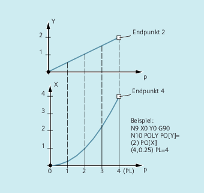
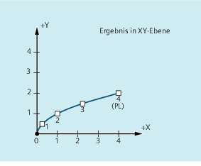

Im eigentlichen Sinn handelt es sich bei der Polynom-Interpolation (POLY) nicht um eine Spline-Interpolationsart. Sie ist in erster Linie als Schnittstelle für die Programmierung extern erzeugter Spline-Kurven gedacht. Hierbei können die Spline-Abschnitte direkt programmiert werden.
Diese Interpolationsart entlastet die NC von der Berechnung der Polynom-Koeffizienten. Sie ist dann optimal einsetzbar, wenn die Koeffizienten direkt von einem CAD-System oder Post-Prozessor kommen.
Polynom 3. Grades:
POLY PO[X]=(xe,a2,a3) PO[Y]=(ye,b2,b3) PO[Z]=(ze,c2,c3) PL=nPolynome 5.Grades und neue Polynomsyntax:
POLY X=PO(xe,a2,a3,a4,a5) Y=PO(ye,b2,b3,b4,b5) Z=PO(ze,c2,c3,c4,c5) PL=nPOLYPATH("AXES","VECT")| Hinweis |
Die Summe der in einem NC-Satz programmierten Polynom-Koeffizienten und Achsen darf die maximal erlaubte Achsanzahl pro Satz nicht überschreiten. |
| Einschalten der Polynom-Interpolation mit einem Satz mit POLY. |
| Polynom-Interpolation selektierbar für die beiden Achsgruppen AXIS oder VECT |
| Endpunkte und Polynom-Koeffizienten |
| Achsbezeichner |
| Angabe der Endposition für die jeweilige Achse; Wertebereich wie Wegmaß |
| Die Koeffizienten a2, a3, a4, und a5 werden mit ihrem Wert geschrieben; Wertebereich wie Wegmaß. Der jeweils letzte Koeffizient kann entfallen, wenn er den Wert Null hat. |
| Länge des Parameterintervalls, auf dem die Polynome definiert sind (Definitionsbereich der Funktion f(p)). Das Intervall beginnt immer bei 0, p kann Werte von 0 bis PL annehmen. Theoretischer Wertebereich für PL: Hinweis: |
Die Polynom-Interpolation wird im Teileprogramm durch den G-Befehl POLY eingeschaltet.
Der G-Befehl POLY gehört zusammen mit G0, G1, G2, G3, ASPLINE, BSPLINE und CSPLINE zur 1. G-Gruppe.
Achsen, die nur mit Namen und Endpunkt programmiert sind (z.B. X10), werden linear verfahren. Sind alle Achsen eines NC-Satzes so programmiert, verhält sich die Steuerung wie bei G1.
Die Polynom-Interpolation wird durch die Programmierung eines anderen Befehls der 1. G-Gruppe (z. B. G0, G1) implizit wieder ausgeschaltet.
Der PO-Wert (PO[]=) bzw. ...=PO(...) gibt alle Polynom-Koeffizienten für eine Achse an. Entsprechend dem Grad des Polynoms werden mehrere Werte durch Kommata getrennt angegeben. Innerhalb eines Satzes sind unterschiedliche Polynomgrade für verschiedene Achsen möglich.
Mit POLYPATH(...) kann die Polynom-Interpolation selektiv für bestimmte Achsgruppen freigegeben werden:
Nur Bahnachsen und Zusatzachsen: |
| |
Nur Orientierungsachsen: |
|
Die jeweils nicht freigegebenen Achsen werden linear verfahren.
Standardmäßig ist die Polynom-Interpolation für beide Achsgruppen freigegeben.
Durch Programmierung ohne Parameter POLYPATH( ) wird die Polynom-Interpolation für alle Achsen deaktiviert.
| Programmcode | Kommentar |
|---|---|
| N10 G1 X… Y… Z… F600 | |
| N11 POLY PO[X]=(1,2.5,0.7) PO[Y]=(0.3,1,3.2) PL=1.5 | ; Polynom-Interpolation ein |
| N12 PO[X]=(0,2.5,1.7) PO[Y]=(2.3,1.7) PL=3 | |
| ... | |
| N20 M8 H126 … | |
| N25 X70 PO[Y]=(9.3,1,7.67) PL=5 | ; gemischte Angaben für die Achsen |
| N27 PO[X]=(10,2.5) PO[Y]=(2.3) | ; kein PL programmiert; es wirkt PL=1 |
| N30 G1 X… Y… Z. | ; Polynom-Interpolation aus |
| … |
Weiterhin gültige Polynomsyntax | Neue Polynomsyntax |
|---|---|
| PO[Achsbezeichner]=(.. , ..) | Achsbezeichner=PO(.. , ..) |
| PO[PHI]=(.. , ..) | PHI=PO(.. , ..) |
| PO[PSI]=(.. , ..) | PSI=PO(.. , ..) |
| PO[THT]=(.. , ..) | THT=PO(.. , ..) |
| PO[]=(.. , ..) | PO(.. , ..) |
| PO[variable]=IC(.. , ..) | variable=PO IC(.. , ..) |
Programmierung
| Programmcode | |
|---|---|
| N9 X0 Y0 G90 F100 | |
| N10 POLY PO[Y]=(2) PO[X]=(4,0.25) PL=4 |
Verlauf der Kurven X(p) und Y(p)
Verlauf der Kurve in der XY-Ebene
Siehe auch:
Polynom-Interpolation (POLY, POLYPATH, PO, PL): Weitere Informationen
Einstellbarer Bahnbezug (SPATH, UPATH)